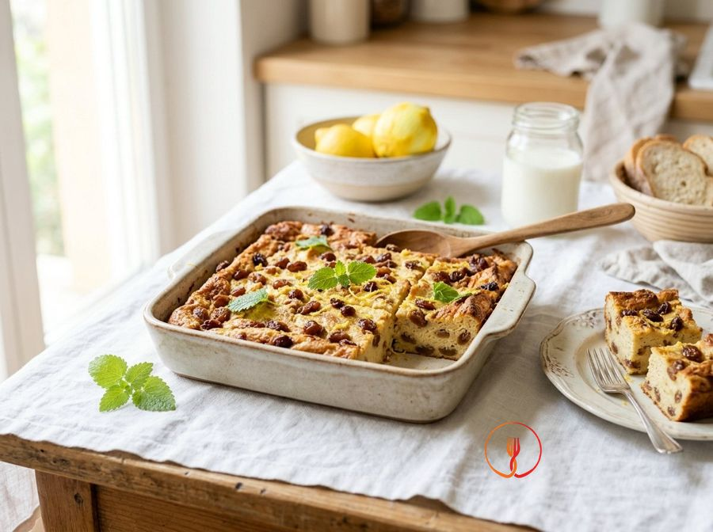

Bread, Milk and Lemon Zest Squares
An excellent waste-reduction recipe to use up leftover bread, transforming it into a creamy and fragrant sweet treat. The final consistency is similar to a thick pudding, perfect for little ones' gums.
A traditional-inspired recovery recipe, where stale bread crumbs are softened in milk and enriched with raisins and lemon. These squares offer a dense, moist texture with the citrusy aroma typical of homemade desserts.
Ingredients
- Stale white bread (crumb only)120 g
- Whole milk300 ml
- Egg1 pcs
- Unwaxed lemon zest1 pcs
- Sultanas20 g
Allergens
Gluten, Eggs, Milk
Method
- Begin by placing the 20g of raisins in a small bowl and covering them with lukewarm water. Allow them to soak for about 15 minutes until they appear plump and soft to the touch. This step is essential to rehydrate the dried fruit and make it easier to digest. Chef's tip: add a drop of lemon juice to the soaking water to prevent the raisins from oxidising and help them maintain a vivid colour.
- Take 120g of stale white breadcrumbs (crusts removed) and crumble them finely with your hands into a large mixing bowl. Gently heat 300ml of whole milk until lukewarm, then pour it entirely over the bread. Let the mixture rest for at least 20 minutes at room temperature, ensuring all the bread is submerged. Chef's tip: press down lightly with a spoon to ensure the milk penetrates the heart of the thicker crumbs.
- After 20 minutes, use a sturdy fork to vigorously mash the bread and milk mixture. Work the mixture with circular motions until you achieve a thick, creamy pulp free of any hard or dry bread pieces. The final result should be a rustic but homogeneous paste. Chef's tip: if the bread still feels too firm, let it rest for another 5 minutes before proceeding to mash.
- Add one whole egg and the grated zest of an untreated organic lemon to the bread pulp. Use a fine grater, taking care to only zest the yellow part of the peel, as the white pith is bitter and would ruin the delicate flavour. Mix thoroughly with a hand whisk or spatula to perfectly incorporate the egg. Chef's tip: crack the egg into a separate small dish before adding it to check for freshness and shell fragments.
- Drain the raisins from the soaking water and squeeze them firmly with your hands to remove all excess liquid. Transfer them to a chopping board and chop very finely with a chef's knife until almost reduced to a paste. This step is crucial for child safety, avoiding any choking hazards from whole pieces. Chef's tip: pat the chopped raisins dry with kitchen paper before adding them to the batter to avoid altering its density.
- Incorporate the finely chopped raisins into the bread and egg mixture, stirring with a wooden spoon to distribute them evenly throughout. Ensure there are no clumps of raisins in one spot, so that every square has the same balanced aroma. The batter should smell intensely of lemon. Chef's tip: if you want an extra aromatic note, you can add a tiny pinch of ground cinnamon along with the raisins.
- Prepare a small square baking tin by lining it carefully with greaseproof paper that has been slightly dampened and squeezed to fit the edges perfectly. Pour the batter inside and level it with a spatula or the back of a spoon, aiming for a consistent thickness of about 2cm. A flat surface will guarantee even cooking throughout. Chef's tip: tap the tin on the worktop to eliminate any air bubbles trapped in the mixture.
- Place the tin in a preheated static oven at 170°C and bake for approximately 25 minutes on the middle shelf. The cake is ready when the surface feels firm to the touch, slightly golden, and no longer wobbles in the centre. Do not overbake, otherwise the edges will become too hard. Chef's tip: perform the toothpick test; if it comes out clean but slightly damp, the internal texture is perfect.
- Remove from the oven and allow the preparation to cool completely inside the tin before turning it out. Once cold, transfer to a chopping board and cut with a plain-edged knife into small, regular cubes (squares) of about 2-3cm. The squares should be soft, moist, and easily mashable against the palate. Chef's tip: wipe the knife blade between cuts to ensure the squares have clean, sharp edges.
Tips
- Squeeze the raisins very firmly after soaking to prevent adding too much water to the batter.
- Mash the bread thoroughly with a fork until it becomes a homogeneous paste before adding the egg.
- Cut the mixture into squares only once it has completely cooled to get clean and precise edges.
Variations
- Replace the raisins with small pieces of dried apple for a less sweet variant.
- Use orange zest instead of lemon for a warmer, more intense aromatic note.
Nutrition facts (estimate)
| Per serving (105 g) | Per 100 g | |
|---|---|---|
| Energy | 653 kJ / 156 kcal | 622 kJ / 149 kcal |
| Protein | 6.8 g | 6.5 g |
| Carbohydrates | 22.1 g | 21.0 g |
| of which sugars | 6.6 g | 6.3 g |
| Fat | 5.1 g | 4.9 g |
| of which saturates | 2.4 g | 2.3 g |
| Fibre | 0.9 g | 0.9 g |
| Salt | 0.28 g | 0.3 g |
AI estimates based on average CREA / USDA data: indicative only, not a substitute for medical or dietitian advice.
Open the recipe in the app for the shopping list, ingredient sheets and nearby shops.